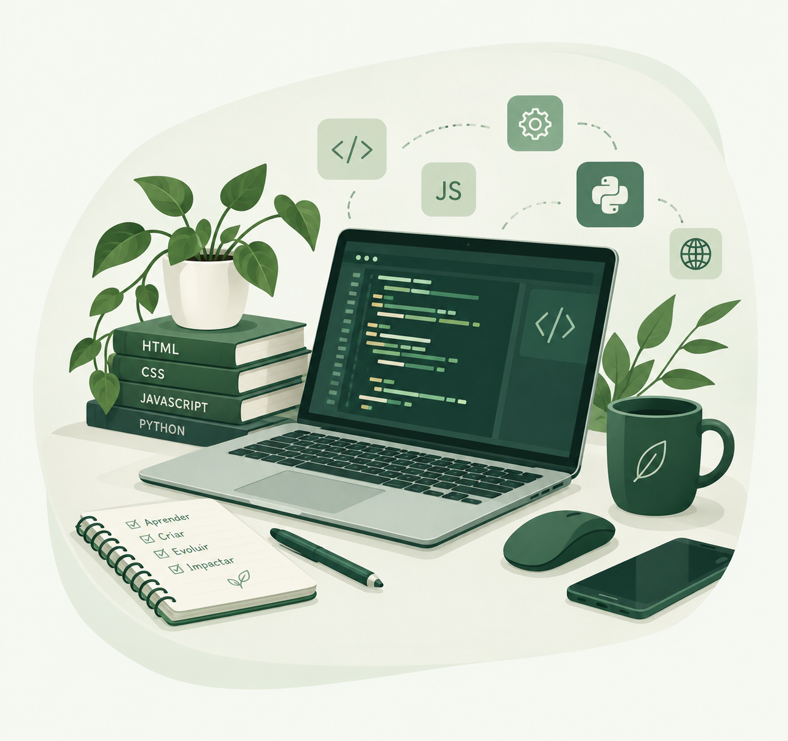
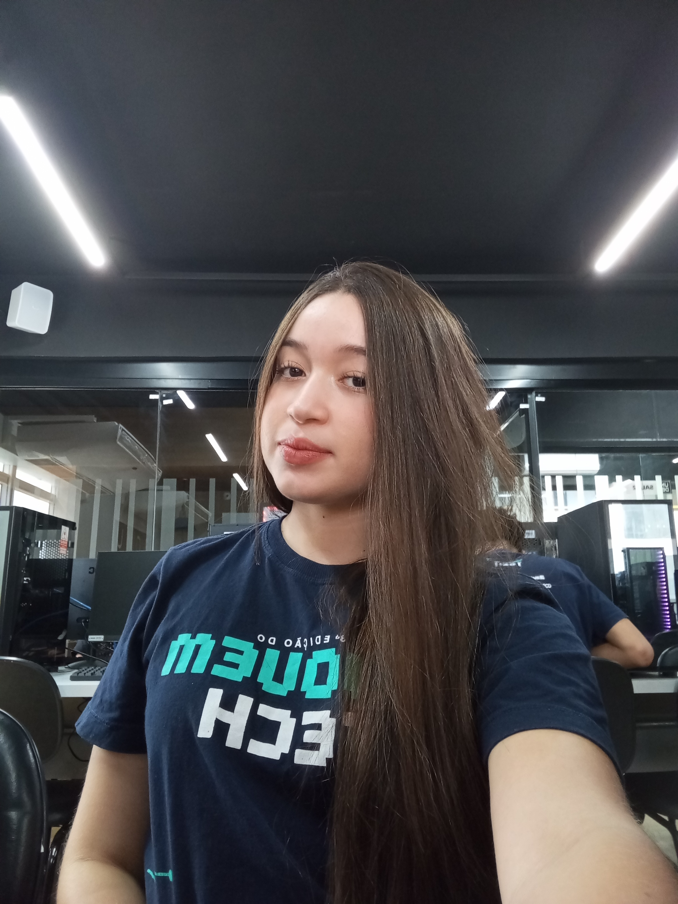
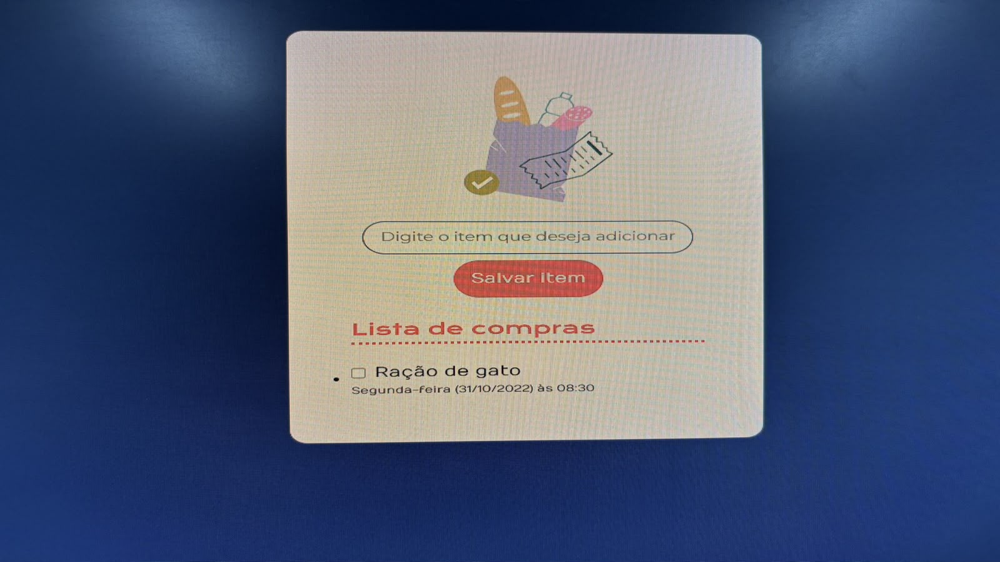
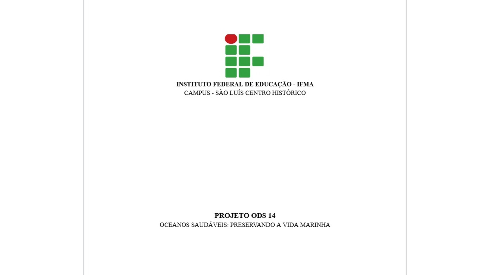

JavaScript
Conhecimentos iniciais em JavaScript, desenvolvendo lógica de programação e aprendendo a criar interações e funcionalidades para páginas web.
Formada como técnica ambiental
Sou formada como técnica em Meio Ambiente e estudante de programação, na tentativa de unir criatividade, lógica e consciência ambiental para transformar ideias em soluções. Estou construindo minha trajetória na tecnologia através de projetos, aprendizado contínuo e dedicação.


Sobre mim
Me chamo Izabelle Andrade Lima, sou formada como técnica em Meio Ambiente pelo IFMA-CCH. Em 2025 estagiei na Carbono Consultoria nessa área e atualmente participo do programa Jovem Tech.
Minha trajetória une a responsabilidade e a visão analítica desenvolvidas na formação ambiental com meu interesse crescente pela tecnologia. Durante o programa, venho desenvolvendo conhecimentos em HTML, CSS, JavaScript, Python e lógica de programação, colocando em prática o que aprendo através de projetos e desafios.
Sou organizada, criativa, responsável e curiosa, e valorizo o aprendizado contínuo. Estou construindo minha trajetória na tecnologia com o objetivo de transformar ideias em soluções funcionais, enquanto evoluo a cada novo projeto.
Habilidades
Conhecimentos que venho desenvolvendo durante minha formação e experiência com tecnologia.
Conhecimentos iniciais em JavaScript, desenvolvendo lógica de programação e aprendendo a criar interações e funcionalidades para páginas web.
Conhecimentos básicos em Python, com foco em lógica de programação, estruturas fundamentais e desenvolvimento de pequenos projetos.
Conhecimentos em estruturação de páginas web, utilizando HTML para organizar conteúdos, textos, imagens, links e outros elementos.
Conhecimentos em estilização de páginas, trabalhando com cores, fontes, espaçamentos, posicionamento e organização visual dos elementos.
Projetos
Projetos desenvolvidos durante minha formação e experiências de aprendizagem.
Projeto 01
Projeto desenvolvido durante a formação da Alura oferecida pelo programa, com o objetivo de criar um jogo interativo em que o usuário precisa descobrir um número secreto.

Projeto 02
Projeto desenvolvido durante a formação da Alura oferecida pelo programa, voltado para a criação de uma lista de compras interativa, permitindo organizar produtos de maneira prática.

Projeto 03
Projeto desenvolvido no IFMA relacionado à ODS 14 — Vida na Água, que busca promover a conservação e o uso sustentável dos oceanos, mares e recursos marinhos.
Experiência & formação
Minha formação e experiências ao longo da minha trajetória.
Jovem Tech
Início da minha trajetória na área de tecnologia, desenvolvendo conhecimentos em lógica de programação, HTML, CSS, JavaScript e Python por meio de aulas e projetos práticos.
Carbono Consultoria
Durante a etapa final da formação, realizei estágio na Carbono Consultoria, colocando em prática conhecimentos adquiridos no curso e desenvolvendo experiência profissional, responsabilidade e organização.
IFMA-CCH
Início da minha formação técnica na área ambiental, desenvolvendo conhecimentos sobre sustentabilidade, preservação ambiental e responsabilidade socioambiental.
Contato
Se você quiser falar sobre um projeto, oportunidade ou parceria, utilize um dos canais abaixo.